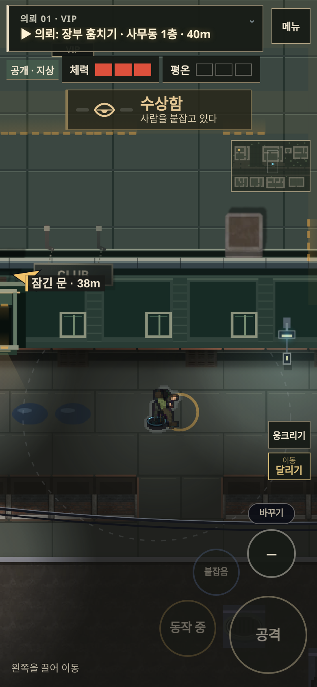
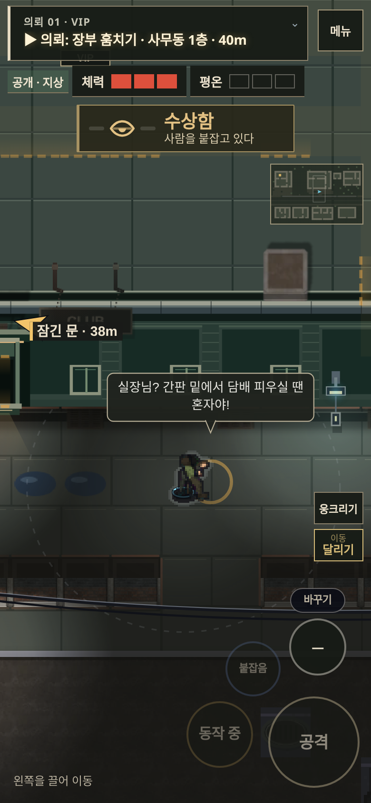
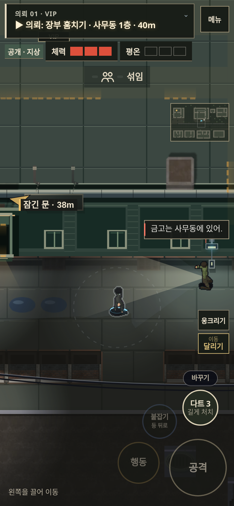
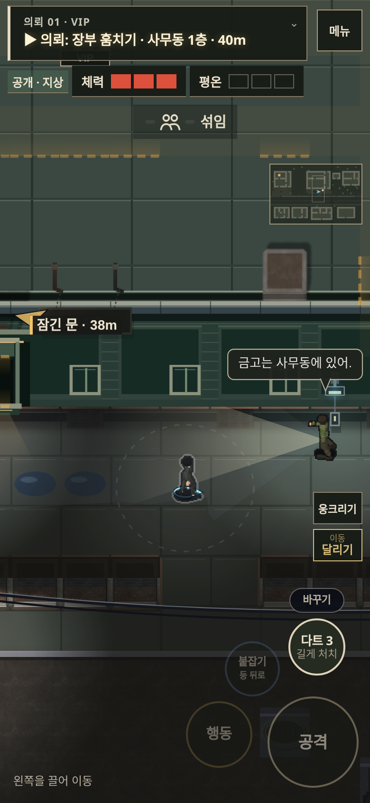

이전 — 답변은 생성됐지만 화면에서 걸러짐

수정 — 붙잡힌 적의 답변을 우선 표시

이전

수정

이전 — 등을 보이며 나옴
수정 — 몸을 돌려 나온 뒤 닫기
동일 물체·동일 시작 위치의 게임 렌더링 비교입니다. 자세 확인용 장면에서는 NPC를 제외했고, 심문 장면은 해당 적만 남겼습니다.
조명 마스크의 해상도와 합성 비용, 대사 배치를 위한 중복 화면 위치 조회를 줄였습니다. 로컬 Chromium의 동일 장면에서 평균 그리기 시간은 모바일 4.42→3.26ms, PC 7.93→5.16ms였습니다. 실제 휴대폰 성능 수치나 프레임 고정 보장은 아닙니다.